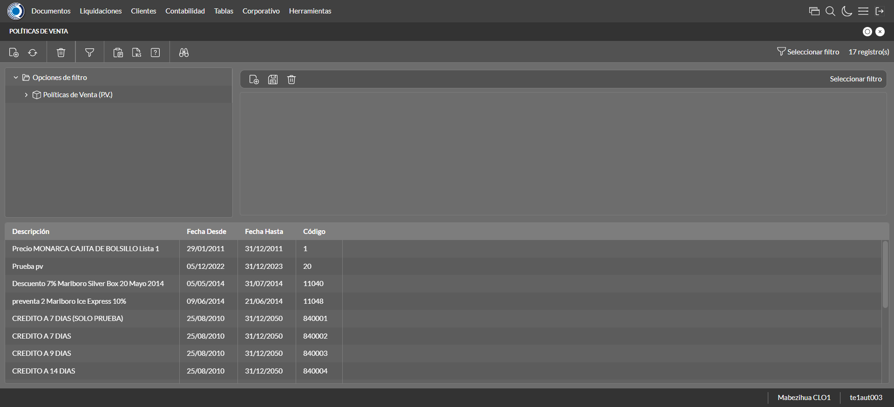

Desarrollado por : Area de Testing PWST
Fecha y hora de inicio : 2022-12-29 10:31:47
Duracion : 0:00:55.552609
Resultado : Total 8，Correctos 4 ，Errores 4 ，Taza de resultado 50.00%
Resumen 50.00% Errores 4 Fallidos 0 Correctos 4 Test realizados 8
| Caso de Prueba | Total | Correctos | Fallido | Error | Detalles | Captura del error |
| PoliticasVenta2.Test: Escenario 1 de Autorizaciones de Credito | 8 | 4 | 0 | 4 | Detalles | |
test |
ft1_1: 2022-12-29 10:31:48,668 - root - INFO - Se abre el chrome
2022-12-29 10:31:50,136 - root - INFO - Entra a la URL
2022-12-29 10:31:50,260 - root - INFO - Maximiza la pantalla
Traceback (most recent call last):
File "C:\Users\jsand\AppData\Local\Programs\Python\Python310\lib\site-packages\selenium-4.4.0-py3.10.egg\selenium\webdriver\remote\switch_to.py", line 87, in frame
frame_reference = self._driver.find_element(By.ID, frame_reference)
File "C:\Users\jsand\AppData\Local\Programs\Python\Python310\lib\site-packages\selenium-4.4.0-py3.10.egg\selenium\webdriver\remote\webdriver.py", line 856, in find_element
return self.execute(Command.FIND_ELEMENT, {
File "C:\Users\jsand\AppData\Local\Programs\Python\Python310\lib\site-packages\selenium-4.4.0-py3.10.egg\selenium\webdriver\remote\webdriver.py", line 434, in execute
self.error_handler.check_response(response)
File "C:\Users\jsand\AppData\Local\Programs\Python\Python310\lib\site-packages\selenium-4.4.0-py3.10.egg\selenium\webdriver\remote\errorhandler.py", line 243, in check_response
raise exception_class(message, screen, stacktrace)
selenium.common.exceptions.NoSuchElementException: Message: no such element: Unable to locate element: {"method":"css selector","selector":"[id="mainFrame"]"}
(Session info: chrome=108.0.5359.125)
Stacktrace:
Backtrace:
(No symbol) [0x0021F243]
(No symbol) [0x001A7FD1]
(No symbol) [0x0009D04D]
(No symbol) [0x000CC0B0]
(No symbol) [0x000CC22B]
(No symbol) [0x000FE612]
(No symbol) [0x000E85D4]
(No symbol) [0x000FC9EB]
(No symbol) [0x000E8386]
(No symbol) [0x000C163C]
(No symbol) [0x000C269D]
GetHandleVerifier [0x004B9A22+2655074]
GetHandleVerifier [0x004ACA24+2601828]
GetHandleVerifier [0x002C8C0A+619850]
GetHandleVerifier [0x002C7830+614768]
(No symbol) [0x001B05FC]
(No symbol) [0x001B5968]
(No symbol) [0x001B5A55]
(No symbol) [0x001C051B]
BaseThreadInitThunk [0x76796BD9+25]
RtlGetFullPathName_UEx [0x77B58FD2+1218]
RtlGetFullPathName_UEx [0x77B58F9D+1165]
(No symbol) [0x00000000]
During handling of the above exception, another exception occurred:
Traceback (most recent call last):
File "C:\Users\jsand\AppData\Local\Programs\Python\Python310\lib\site-packages\selenium-4.4.0-py3.10.egg\selenium\webdriver\remote\switch_to.py", line 90, in frame
frame_reference = self._driver.find_element(By.NAME, frame_reference)
File "C:\Users\jsand\AppData\Local\Programs\Python\Python310\lib\site-packages\selenium-4.4.0-py3.10.egg\selenium\webdriver\remote\webdriver.py", line 856, in find_element
return self.execute(Command.FIND_ELEMENT, {
File "C:\Users\jsand\AppData\Local\Programs\Python\Python310\lib\site-packages\selenium-4.4.0-py3.10.egg\selenium\webdriver\remote\webdriver.py", line 434, in execute
self.error_handler.check_response(response)
File "C:\Users\jsand\AppData\Local\Programs\Python\Python310\lib\site-packages\selenium-4.4.0-py3.10.egg\selenium\webdriver\remote\errorhandler.py", line 243, in check_response
raise exception_class(message, screen, stacktrace)
selenium.common.exceptions.NoSuchElementException: Message: no such element: Unable to locate element: {"method":"css selector","selector":"[name="mainFrame"]"}
(Session info: chrome=108.0.5359.125)
Stacktrace:
Backtrace:
(No symbol) [0x0021F243]
(No symbol) [0x001A7FD1]
(No symbol) [0x0009D04D]
(No symbol) [0x000CC0B0]
(No symbol) [0x000CC22B]
(No symbol) [0x000FE612]
(No symbol) [0x000E85D4]
(No symbol) [0x000FC9EB]
(No symbol) [0x000E8386]
(No symbol) [0x000C163C]
(No symbol) [0x000C269D]
GetHandleVerifier [0x004B9A22+2655074]
GetHandleVerifier [0x004ACA24+2601828]
GetHandleVerifier [0x002C8C0A+619850]
GetHandleVerifier [0x002C7830+614768]
(No symbol) [0x001B05FC]
(No symbol) [0x001B5968]
(No symbol) [0x001B5A55]
(No symbol) [0x001C051B]
BaseThreadInitThunk [0x76796BD9+25]
RtlGetFullPathName_UEx [0x77B58FD2+1218]
RtlGetFullPathName_UEx [0x77B58F9D+1165]
(No symbol) [0x00000000]
During handling of the above exception, another exception occurred:
Traceback (most recent call last):
File "C:\xampp\htdocs\versiones\automatizaciones\AutoPWST\02PV\testCase\PoliticasVenta2.py", line 32, in test
self.driver.switch_to.frame("mainFrame")
File "C:\Users\jsand\AppData\Local\Programs\Python\Python310\lib\site-packages\selenium-4.4.0-py3.10.egg\selenium\webdriver\remote\switch_to.py", line 92, in frame
raise NoSuchFrameException(frame_reference)
selenium.common.exceptions.NoSuchFrameException: Message: mainFrame
|
|
||||
test_000: Ingresa a la base de datos |
pt1_2: 2022-12-29 10:31:53,355 - root - INFO - Escribe el usuario
2022-12-29 10:31:53,427 - root - INFO - Escribe la contraseña
2022-12-29 10:31:53,487 - root - INFO - Se dio clic en el boton ingresar
2022-12-29 10:31:54,181 - root - INFO - Ejecutar Enterprise
2022-12-29 10:31:58,253 - root - INFO - Cambia entre pestañas
|
|
||||
test_001: Abre menu y ejecuta pantalla |
pt1_3: 2022-12-29 10:32:09,194 - root - INFO - Abre la pantalla de Politicas de Venta
2022-12-29 10:32:10,278 - root - INFO - La pantalla ejecutada es Politicas de Venta
2022-12-29 10:32:10,283 - root - INFO - Captura: C:\xampp\htdocs\versiones\automatizaciones\AutoPWST\02PV\report\img screen：20221229_10_32_10.png
2022-12-29 10:32:21,034 - root - INFO - Se presiona el boton 'Nuevo', para crear un nuevo registro.
|
 | ||||
test_002: Abre la ventana de nuevo y crear un registro |
pt1_4: 2022-12-29 10:32:21,604 - root - INFO - Se abrio la pantalla para el ingreso de un registro nuevo.
2022-12-29 10:32:21,635 - root - INFO - El campo 'Codigo' si se encuentra visible.
2022-12-29 10:32:21,697 - root - INFO - El campo 'Codigo Alternativo' si se encuentra visible.
2022-12-29 10:32:21,738 - root - INFO - El campo 'Descrición' si se encuentra visible.
2022-12-29 10:32:21,768 - root - INFO - El campo 'Moneda' si se encuentra visible.
2022-12-29 10:32:21,798 - root - INFO - El campo 'Aplicable en' si se encuentra visible.
2022-12-29 10:32:21,830 - root - INFO - El campo 'Activa' si se encuentra visible.
2022-12-29 10:32:21,859 - root - INFO - El campo 'Aplicación Global' si se encuentra visible.
2022-12-29 10:32:21,913 - root - INFO - Ingresa el codigo del nuevo registro
2022-12-29 10:32:21,988 - root - INFO - Ingresa el codigo alternativo del nuevo registro
2022-12-29 10:32:22,172 - root - INFO - Ingresa la descripción del nuevo registro
2022-12-29 10:32:23,102 - root - INFO - Se dió doble click en el registro de Moneda.
2022-12-29 10:32:23,622 - root - INFO - Se dió click en la opción BackOffice y Mobile.
2022-12-29 10:32:23,683 - root - INFO - Se dió click en el checkbox Activa.
2022-12-29 10:32:23,739 - root - INFO - Se dió click en el checkbox Aplicación Global.
2022-12-29 10:32:23,788 - root - INFO - Se hace el cambio a la pestaña Por Articulo para continuar con el registro nuevo
2022-12-29 10:32:24,380 - root - INFO - Se presiona el boton 'Nuevo', para crear un nuevo registro de Por Articulo.
2022-12-29 10:32:25,016 - root - INFO - El campo 'Artículo' si se encuentra visible.
2022-12-29 10:32:25,046 - root - INFO - El campo 'Grupo Política a Bonificar' si se encuentra visible.
2022-12-29 10:32:25,075 - root - INFO - El campo 'Cantidad a Bonificar(Packing)' si se encuentra visible.
2022-12-29 10:32:25,105 - root - INFO - El campo 'Cantidad en Bonificación(Unidad)' si se encuentra visible.
2022-12-29 10:32:25,137 - root - INFO - El campo 'Tope Descuento 1' si se encuentra visible.
2022-12-29 10:32:25,168 - root - INFO - El campo 'Tope Descuento 2' si se encuentra visible.
2022-12-29 10:32:25,250 - root - INFO - Ingresa el Articulo del nuevo registro
2022-12-29 10:32:25,332 - root - INFO - Ingresa el Grupo a bonificar del nuevo registro
2022-12-29 10:32:25,414 - root - INFO - Ingresa la Cantidad a Bonificar del nuevo registro
2022-12-29 10:32:25,497 - root - INFO - Ingresa la Cantidad en Bonificación del nuevo registro
2022-12-29 10:32:25,579 - root - INFO - Ingresa el Tope Descuento 1 del nuevo registro
2022-12-29 10:32:25,689 - root - INFO - Ingresa el Tope Descuento 2 del nuevo registro
2022-12-29 10:32:26,248 - root - INFO - Se presiona el boton 'Guardar', para guardar el registro de Por Articulo.
2022-12-29 10:32:26,471 - root - INFO - Se da clic en el boton Guardar; se debe crear un nuevo registro.
|
|
||||
test_003: Repetir el registro creado anteriormente |
ft1_5: 2022-12-29 10:32:26,914 - root - INFO - Se presiona el boton 'Refrescar', para crear un nuevo registro igual al anterior.
2022-12-29 10:32:27,085 - root - INFO - Se presiona el boton 'Nuevo', para crear un nuevo registro igual al anterior.
2022-12-29 10:32:27,627 - root - INFO - Se abrio la pantalla para el ingreso de un registro nuevo.
2022-12-29 10:32:27,733 - root - INFO - Ingresa el codigo del nuevo registro
2022-12-29 10:32:27,805 - root - INFO - Ingresa el codigo alternativo del nuevo registro
2022-12-29 10:32:27,936 - root - INFO - Ingresa la descripción del nuevo registro
2022-12-29 10:32:28,881 - root - INFO - Se dió doble click en el registro de Moneda.
2022-12-29 10:32:29,415 - root - INFO - Se dió click en la opción BackOffice y Mobile.
2022-12-29 10:32:29,474 - root - INFO - Se dió click en el checkbox Activa.
2022-12-29 10:32:29,527 - root - INFO - Se dió click en el checkbox Aplicación Global.
2022-12-29 10:32:29,573 - root - INFO - Se da clic en el boton Guardar; NO se debe crear un nuevo registro.
2022-12-29 10:32:30,575 - root - INFO - Captura: C:\xampp\htdocs\versiones\automatizaciones\AutoPWST\02PV\report\img screen：20221229_10_32_30.png
Traceback (most recent call last):
File "C:\xampp\htdocs\versiones\automatizaciones\AutoPWST\02PV\testCase\repetirregistro.py", line 190, in repetirregistro
Cierra_mensaje = self.wait.until(conditions.visibility((By.XPATH, Configuracion.btn_cerrar)))
File "C:\Users\jsand\AppData\Local\Programs\Python\Python310\lib\site-packages\selenium-4.4.0-py3.10.egg\selenium\webdriver\support\wait.py", line 90, in until
raise TimeoutException(message, screen, stacktrace)
selenium.common.exceptions.TimeoutException: Message:
Stacktrace:
Backtrace:
(No symbol) [0x0021F243]
(No symbol) [0x001A7FD1]
(No symbol) [0x0009D04D]
(No symbol) [0x000CC0B0]
(No symbol) [0x000CC22B]
(No symbol) [0x000FE612]
(No symbol) [0x000E85D4]
(No symbol) [0x000FC9EB]
(No symbol) [0x000E8386]
(No symbol) [0x000C163C]
(No symbol) [0x000C269D]
GetHandleVerifier [0x004B9A22+2655074]
GetHandleVerifier [0x004ACA24+2601828]
GetHandleVerifier [0x002C8C0A+619850]
GetHandleVerifier [0x002C7830+614768]
(No symbol) [0x001B05FC]
(No symbol) [0x001B5968]
(No symbol) [0x001B5A55]
(No symbol) [0x001C051B]
BaseThreadInitThunk [0x76796BD9+25]
RtlGetFullPathName_UEx [0x77B58FD2+1218]
RtlGetFullPathName_UEx [0x77B58F9D+1165]
(No symbol) [0x00000000]
During handling of the above exception, another exception occurred:
Traceback (most recent call last):
File "C:\xampp\htdocs\versiones\automatizaciones\AutoPWST\02PV\testCase\PoliticasVenta2.py", line 74, in test_003
success = repetirregistro.repetirregistro.repetirregistro(self, conditions, Configuracion)
File "C:\xampp\htdocs\versiones\automatizaciones\AutoPWST\02PV\testCase\repetirregistro.py", line 195, in repetirregistro
except (NoSuchElementException, TimeoutException) as e:
NameError: name 'NoSuchElementException' is not defined
|
|||||
test_004: Modificar el registro |
ft1_6: 2022-12-29 10:32:37,170 - root - ERROR - No se dió clcik en el botón Refrescar, validar que la acción anterior haya finalizado, que el xpath sea el correcto o que la página no presente lentitud
2022-12-29 10:32:37,172 - root - INFO - Captura: C:\xampp\htdocs\versiones\automatizaciones\AutoPWST\02PV\report\img screen：20221229_10_32_37.png
Traceback (most recent call last):
File "C:\xampp\htdocs\versiones\automatizaciones\AutoPWST\02PV\testCase\modificarregistro.py", line 22, in modificarregistro
Refresca2.click()
File "C:\Users\jsand\AppData\Local\Programs\Python\Python310\lib\site-packages\selenium-4.4.0-py3.10.egg\selenium\webdriver\remote\webelement.py", line 88, in click
self._execute(Command.CLICK_ELEMENT)
File "C:\Users\jsand\AppData\Local\Programs\Python\Python310\lib\site-packages\selenium-4.4.0-py3.10.egg\selenium\webdriver\remote\webelement.py", line 396, in _execute
return self._parent.execute(command, params)
File "C:\Users\jsand\AppData\Local\Programs\Python\Python310\lib\site-packages\selenium-4.4.0-py3.10.egg\selenium\webdriver\remote\webdriver.py", line 434, in execute
self.error_handler.check_response(response)
File "C:\Users\jsand\AppData\Local\Programs\Python\Python310\lib\site-packages\selenium-4.4.0-py3.10.egg\selenium\webdriver\remote\errorhandler.py", line 243, in check_response
raise exception_class(message, screen, stacktrace)
selenium.common.exceptions.ElementClickInterceptedException: Message: element click intercepted: Element <div tabindex="12" id="_AC89776DFA214F6A9C7482DDB021BF5D__refresh_element" name="_AC89776DFA214F6A9C7482DDB021BF5D__refresh_element">...</div> is not clickable at point (56, 88). Other element would receive the click: <ui-window id="_AC89776DFA214F6A9C7482DDB021BF5D" formid="_AC89776DFA214F6A9C7482DDB021BF5D" name="_AC89776DFA214F6A9C7482DDB021BF5D" class="ui-window-toolbar child ui-dockedwindow ui-window ui-window-not-maximizable ui-window-not-minimizable ui-background-window" uistyle="child ui-dockedwindow" height="1ru" visible="true" enabled="true" style="height: 600px; width: 800px; left: 0px; top: 0px;">...</ui-window>
(Session info: chrome=108.0.5359.125)
Stacktrace:
Backtrace:
(No symbol) [0x0021F243]
(No symbol) [0x001A7FD1]
(No symbol) [0x0009D04D]
(No symbol) [0x000D28B9]
(No symbol) [0x000D08CC]
(No symbol) [0x000CE4CB]
(No symbol) [0x000CD164]
(No symbol) [0x000C32A6]
(No symbol) [0x000E858C]
(No symbol) [0x000C2BFF]
(No symbol) [0x000E8804]
(No symbol) [0x000FC9EB]
(No symbol) [0x000E8386]
(No symbol) [0x000C163C]
(No symbol) [0x000C269D]
GetHandleVerifier [0x004B9A22+2655074]
GetHandleVerifier [0x004ACA24+2601828]
GetHandleVerifier [0x002C8C0A+619850]
GetHandleVerifier [0x002C7830+614768]
(No symbol) [0x001B05FC]
(No symbol) [0x001B5968]
(No symbol) [0x001B5A55]
(No symbol) [0x001C051B]
BaseThreadInitThunk [0x76796BD9+25]
RtlGetFullPathName_UEx [0x77B58FD2+1218]
RtlGetFullPathName_UEx [0x77B58F9D+1165]
(No symbol) [0x00000000]
During handling of the above exception, another exception occurred:
Traceback (most recent call last):
File "C:\xampp\htdocs\versiones\automatizaciones\AutoPWST\02PV\testCase\PoliticasVenta2.py", line 102, in test_004
success = modificarregistro.modificarregistro.modificarregistro(self, conditions, Configuracion)
File "C:\xampp\htdocs\versiones\automatizaciones\AutoPWST\02PV\testCase\modificarregistro.py", line 32, in modificarregistro
return false
NameError: name 'false' is not defined
|
|||||
test_005: Eliminar el registro creado |
ft1_7: 2022-12-29 10:32:38,508 - root - ERROR - No se dió click en el botón Refrescar, validar que la acción anterior haya finalizado, que el xpath sea el correcto o que la página no presente lentitud
2022-12-29 10:32:38,508 - root - INFO - Captura: C:\xampp\htdocs\versiones\automatizaciones\AutoPWST\02PV\report\img screen：20221229_10_32_38.png
2022-12-29 10:32:42,996 - root - INFO - Se cierra chrome
Traceback (most recent call last):
File "C:\xampp\htdocs\versiones\automatizaciones\AutoPWST\02PV\testCase\PoliticasVenta2.py", line 138, in test_005
raise Exception()
Exception
|
|||||
test_006: Cerrar_Navegador |
Correcto |
|
||||
| Caso de prueba | 8 | 4 | 0 | 4 | Taza de resultado：50.00% | |